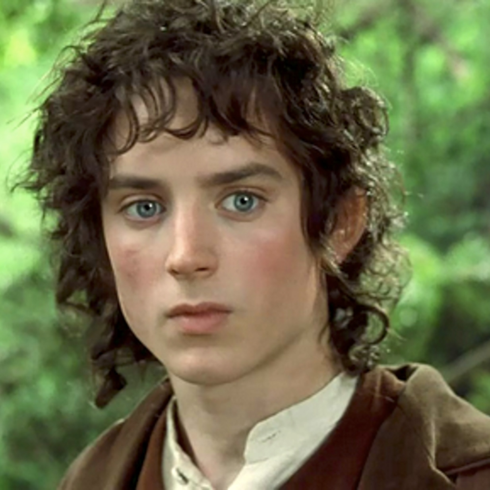
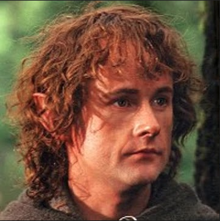
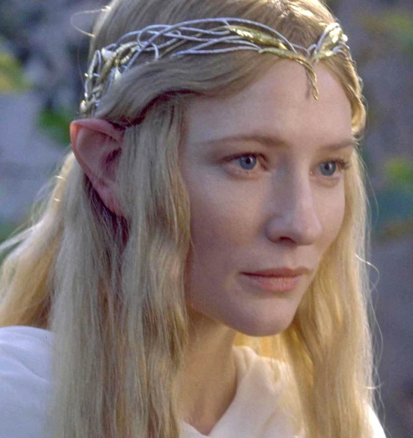
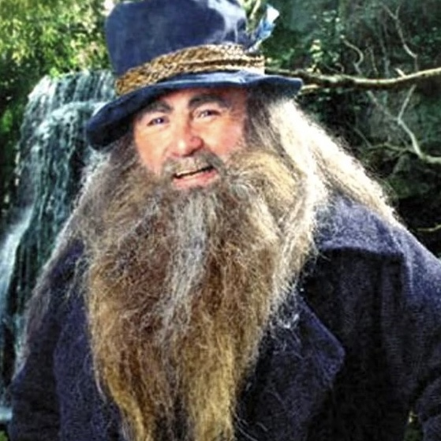
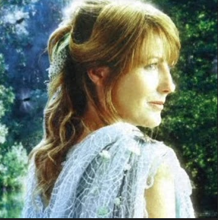
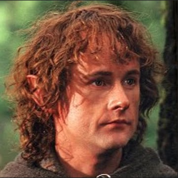
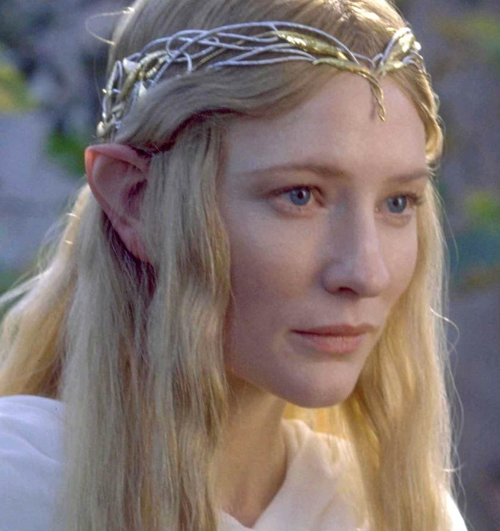
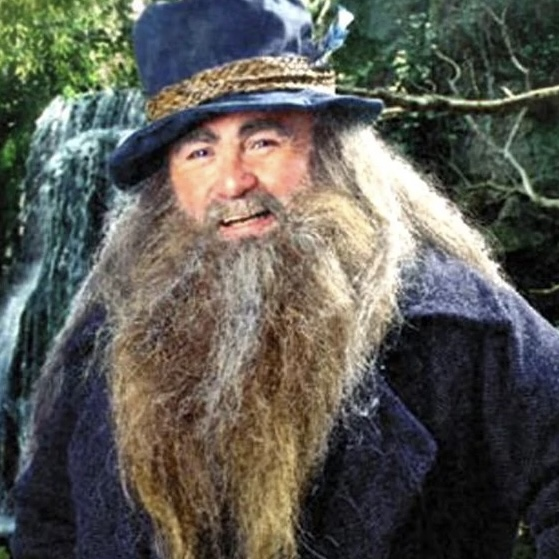
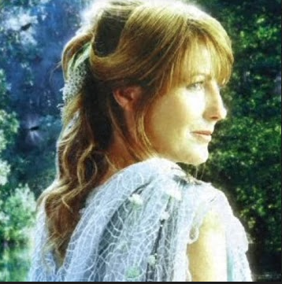

Los personajes del Señor de los Anillos (y de otras obras literarias de alta fantasía de Tolkien) se encuentran emplazados en la localidad ficticia de la Tierra Media (Middle-Earth), y en las épocas de la Primera, Segunda o Tercera Edad.
El exhaustivo trabajo de Tolkien le llevó a la creación de diferentes razas, culturas y especies a la hora de formar sus personajes. Sus vastos conocimientos de filología y literatura le permitieron también ofrecer nombres de personajes con gran atractivo, y que forman parte de los idiomas creados por el autor para el mundo narrativo de El Señor de los Anillos.
A partir de un Json que recopila datos sobre los personajes de La Comunidad del Anillo, es posible llevar acabo un análisis más detallado de esta obra.
Galería

 







Si caracterizamos a las personas responsables de estos crimenes, podemos saber su edad
Sus caracteristicas raciales
Y, por ultimo, su genero
Este último párrafo debe ser el cierre de lo presentado. Mauris ultrices, ligula nec vulputate bibendum, nisi neque ultricies sem, eget volutpat magna nulla quis libero. Pellentesque habitant morbi tristique senectus et netus et malesuada fames ac turpis egestas. Praesent nec est ex. Nulla nunc elit, mattis vel justo ac, iaculis interdum tellus. Praesent id orci leo. Phasellus eleifend tellus cursus enim imperdiet, ullamcorper ullamcorper augue volutpat. Sed at mi in magna imperdiet accumsan. Aenean cursus velit urna, lacinia hendrerit turpis congue vitae. Cras non tortor vestibulum, efficitur est vitae, posuere justo.
Este párrafo más pequeño debería entregar información adicional: Que se trata de un trabajo para el electivo de Introducción al Desarrollo Front End con HTML, CSS y JavaScript; que el trabajo está "inspirado" en Analysing the volcanic lightning from the Tonga eruption, que originalmente fue desarrollado para Reuters Graphics por Manas Sharma y Simon Scarr; que el trabajo se resuelve con Bootstrap y Charts.js, además de consultas a un CSV y un JSON; etc.